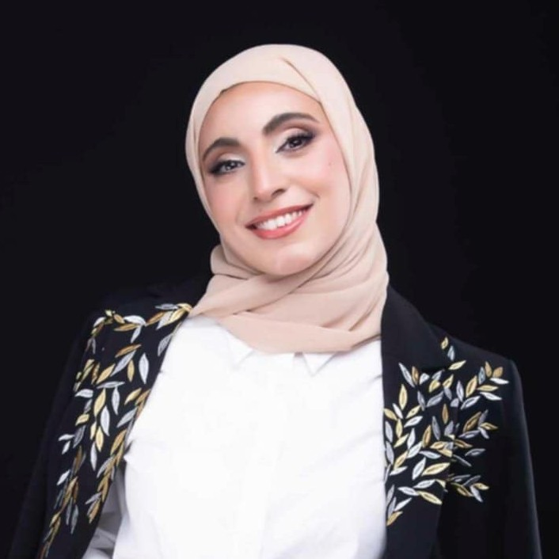

Oral Examination and diagnosis, Endodontics (root canal treatment), Restorations (composite, GIC, amalgam fillings), Scaling and prophylaxis, Prosthodontics (crowns and bridges), Pediatric dentistry (managing and treating children), Teeth whitening, Simple extractions and suturing, 3Shape software (digital dentistry), Dental photography and image editing
Excellent patient communication, Detail-oriented and motivated, Teamwork and adaptability, Ethical manners
English: Full Professional Proficiency